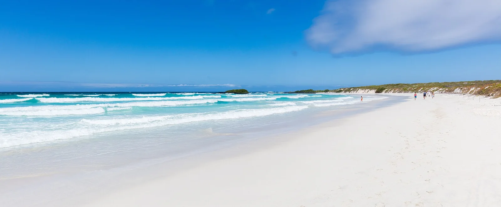

Tortuga Bay
Galápagos, Équateur · baignade, kayak, snorkeling

Longue plage de sable blanc qu’on rejoint par un sentier depuis Puerto Ayora, sur l’île Santa Cruz. Au bout, Playa Mansa est une anse abritée bordée de mangroves, idéale pour la baignade et le kayak.
- Lieu
- Galápagos, Équateur
- Niveau
- Débutant
- Activités
- baignade, kayak, snorkeling
- Type d'eau
- Mer / océan
- Coordonnées
- -0.76, -90.34 (position approximative du secteur)
Dangers à connaître
- Courants dangereux sur Playa Brava : baignade interdite ou déconseillée.
- Iguanes marins et tortues : garde tes distances.
Le conseil d'Ocean Buddy
Baigne-toi uniquement à Playa Mansa : Playa Brava, la grande plage, est exposée aux courants. Le sentier n’est ouvert qu’en journée.
Ouvrir dans Ocean Buddy Télécharger sur l'App Store
Source : Fiche Ocean Buddy · septembre 2026 · à vérifier localement.